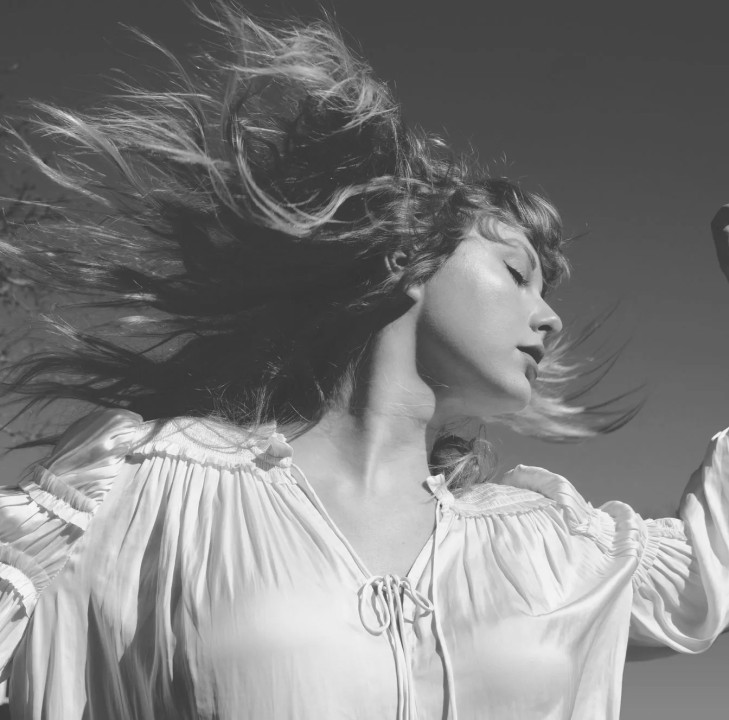

TAYLOR SWIFT

Taylor Alison Swift (born December 13, 1989) is an American singer-songwriter. Known for her biographical songwriting, artistic reinventions, and cultural impact, Swift is a leading figure in popular music and the subject of widespread public interest.